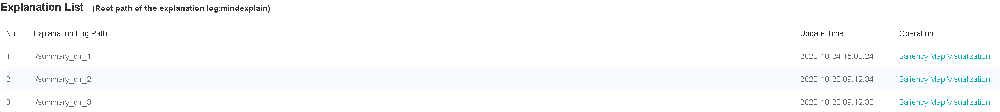
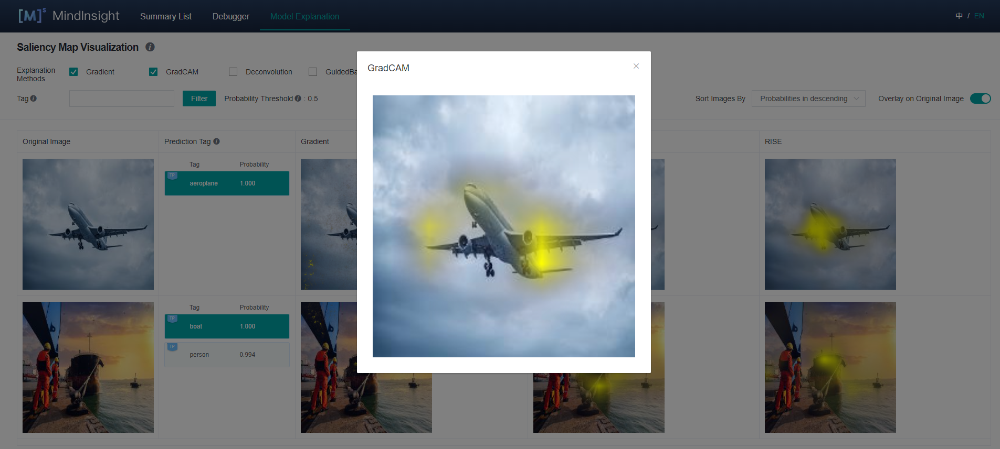
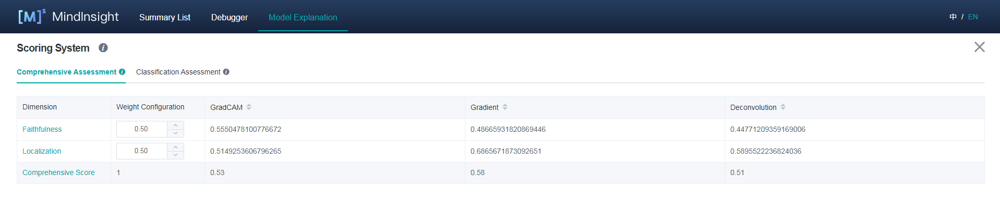

Explain Models¶
Linux Ascend GPU Model Optimization Beginner Intermediate Expert

Overview¶
Currently, most deep learning models are black-box models with good performance but poor explainability. The model explanation module aims to provide users with explanation of the model decision basis, help users better understand the model, trust the model, and improve the model when an error occurs in the model.
In some critical application scenarios, such as automatic driving, financial decision-making, etc., AI model cannot be truly applied if it is not interpretable for legal and policy supervision reasons. Therefore, the interpretability of the model is becoming more and more important. As a consequence, model explanation is an important part of improving MindSpore’s applicability and user-friendliness.
To be specific, in the task of image classification, a widely-used group of explanation methods will highlight the most critical area that affects the classification decision of the model. We call it “saliency map”. If the highlighted parts are indeed the key features of the targeted label, then the features learned by the model are usually correct, thus the users can trust the effect and decision of the model. If the model focuses on irrelevant parts, even if the prediction label is correct, it does not mean that the model is reliable, the model developers still need to optimize and improve the model. This may be due to the correlation of some irrelevant features in the training data. Model developers can consider further data augmentation to correct the bias learned by the model correspondingly.
Besides a variety of explanation methods, we also provide a set of evaluation methods to evaluate the explanation methods from various dimensions. It helps users compare and select the explanation methods that are most suitable for a particular scenario.
Operation Process¶
Preparing the Script¶
Currently, MindSpore provides the explanation methods and explanation evaluation Python API. You can use the provided explanation methods by mindspore.explainer.explanation and the provided explanation evaluation by mindspore.explainer.benchmark. You need to prepare the black-box model and data to be explained, instantiate explanation methods or explanation evaluation according to your need and call the explanation API in your script to collect the explanation result and explanation evaluation result.
MindSpore also provides mindspore.explainer.ImageClassificationRunner to run all explanation methods and explanation evaluation methods automatically. You just need to register the instantiated object and then all explanation methods and explanation evaluation methods will be executed. Explanation logs containing explanation results and explanation evaluation results will be automatically generated and stored.
The following uses ResNet-50 and multi-label dataset with 20 classes as an example. Initializing the explanation methods in explanation and the evaluation methods in benchmark, the users can then use ImageClassificationRunner to execute and explanation and evaluation for the black-box model. The sample code is as follows:
import mindspore.nn as nn
from mindspore import load_checkpoint, load_param_into_net
from mindspore.explainer.explanation import GradCAM, GuidedBackprop
from mindspore.explainer.benchmark import Faithfulness, Localization
from mindspore.explainer import ImageClassificationRunner
num_classes = 20
# please refer to model_zoo for the model architecture of resnet50
net = resnet50(num_classes)
param_dict = load_checkpoint("resnet50.ckpt")
load_param_into_net(net, param_dict)
# initialize explainers with the loaded black-box model
gradcam = GradCAM(net, layer='layer4')
guidedbackprop = GuidedBackprop(net)
# initialize benchmarkers to evaluate the chosen explainers
# for Faithfulness, the initialization needs a activation function that transforms the output of the network to a probability is also needed.
activation_fn = nn.Sigmoid() # for multi-label classification
faithfulness = Faithfulness(num_labels=num_classes, metric='InsertionAUC', activation_fn=activation_fn)
localization = Localization(num_labels=num_classes, metric='PointingGame')
# returns the dataset to be explained, when localization is chosen, the dataset is required to provide bounding box
# the columns of the dataset should be in [image], [image, labels], or [image, labels, bbox] (order matters).
# You may refer to 'mindspore.dataset.project' for columns managements.
dataset_path = "dataset_dir"
dataset = get_dataset(dataset_path)
# specify the class names of the dataset
classes = [
'aeroplane', 'bicycle', 'bird', 'boat', 'bottle', 'bus', 'car', 'cat',
'chair', 'cow', 'diningtable', 'dog', 'horse', 'motorbike', 'person',
'pottedplant', 'sheep', 'sofa', 'train', 'tvmonitor',
]
data = (dataset, classes)
explainers = [gradcam, guidedbackprop]
benchmarkers = [faithfulness, localization]
# initialize runner with specified summary_dir
runner = ImageClassificationRunner(summary_dir='./summary_dir', network=net, activation_fn=activation_fn, data=data)
runner.register_saliency(explainers, benchmarkers)
# execute runner.run to generate explanation and evaluation results to save it to summary_dir
runner.run()
Restrictions¶
Only support CNN of image classification models, such as Lenet, Resnet, Alexnet.
Only support PyNative mode.
All instances of explanation and evaluation methods cannot be reused across runners. Explanation and evaluation methods have to be instantiated exclusively for each runner. Otherwise, errors may occur. A correct example is shown below.
gradcam = GradCAM(net, layer='layer4')
guidedbackprop = GuidedBackprop(net)
runner = ImageClassificationRunner(summary_dir='./summary_dir_1', network=net, activation_fn=activation_fn, data=data)
runner.register_saliency(expaliners=[gradcam, guidedbackprop])
runner.run()
# generate another summary with GradCAM only
runner2 = ImageClassificationRunner(summary_dir='./summary_dir_2', network=net, activation_fn=activation_fn, data=data)
# reusing explainer instance in other runner, errors may occur
# runner2.register_saliency(explainers=[gradcam])
# instantiating a new GradCAM is the correct way
gradcam2 = GradCAM(net, layer='layer4')
runner2.register_saliency(explainers=[gradcam2])
runner2.run()
Enabling MindInsight¶
Enable MindInsight and click Model Explanation on the top of the page. All explanation log paths are displayed. When a log path meets the conditions, the Saliency Map Visualization buttons are displayed in the Operation column.

Pages and Functions¶
Saliency Map Visualization¶
Saliency map visualization is used to display the image area that has the most significant impact on the model decision-making result. Generally, the highlighted regions can be considered as key features of the objective classification.
The following information is displayed on the Saliency Map Visualization page:
Objective dataset set by a user through the Python API of the dataset.
Ground truth tags, prediction tags, and the prediction probabilities of the model for the corresponding tags. The system adds the TP, TN, FP and FN flags(meanings are provided in the page’s information) in the upper left corner of the corresponding tag based on the actual requirements.
A saliency map given by the selected explanation method.
Operations:
Select the required explanation methods. Currently, we support four explanation methods. More explanation methods will be provided in the future.
Click Overlay on Original Image in the upper right corner of the page to overlay the saliency map on the original image.
Click different tags to display the saliency map analysis results of the model for different tags. For different classification results, the focus of the model is usually different.
Use the tag filtering function on the upper part of the page to filter out images with specified tags.
Select an image display sequence from Sort Images By in the upper right corner of the page.
Click View Score on the right of an explanation method. The page for assessing all explanation methods is displayed.
Click image you will see the higher resolution image.

Explanation Method Assessment¶
Comprehensive Assessment¶
The provided explanation methods are scored from different dimensions. We provide various dimensions scores to help users compare the performance and select the most suitable one. You can configure weights for metrics in a specific scenario to obtain the comprehensive score.

Classification Assessment¶
The classification assessment page provides two types of comparison. One is to compare scores of different evaluation dimensions of the same explanation method in each tag. The other is to compare scores of different explanation methods of the same evaluation dimension in each tag.